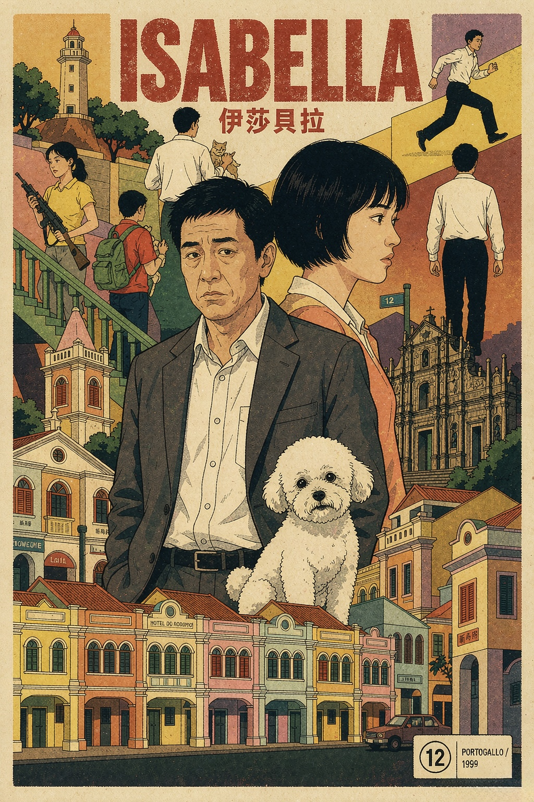

《伊莎貝拉》觀後感
一九九九年前夕，澳門把最後一個夏天藏進一隻狗的名字｜2006
《伊莎貝拉》從來不是一部單純的父女救贖電影，它捕捉的是九十年代末，澳門最安靜、最潮濕、最貼近人心底深處的暮色。故事設定在一九九九年，澳門回歸中國前四十八天。澳門司警馬振成（杜汶澤飾）捲入走私香菸案件遭到停職，配槍被收回，…


《伊莎貝拉》從來不是一部單純的父女救贖電影，它捕捉的是九十年代末，澳門最安靜、最潮濕、最貼近人心底深處的暮色。
故事設定在一九九九年，澳門回歸中國前四十八天。澳門司警馬振成（杜汶澤飾）捲入走私香菸案件遭到停職，配槍被收回，連同身為警察的尊嚴一併奪去。他依舊夜夜流連、強裝瀟灑，掩飾內心的空虛與落魄，直到一名自稱是他女兒的十七歲少女張碧欣（梁洛施飾）闖入他的生活。碧欣母親於去年病逝，她積欠房租被迫搬離住處，連最心愛的西施狗「伊莎貝拉」也意外走失。而這隻小狗的名字，正是她母親年輕時的英文名。一場尋狗之旅就此展開，這對剛相認的陌生父女，在漫長的尋覓途中，找回的不只是走失的寵物，還有遺失已久的溫柔與親情，以及藏在歲月裡的秘密。
這部作品是彭浩翔早年的經典之作，也是他首部入選國際影展正式競賽的長片，不僅代表香港角逐奧斯卡外語片，更入圍柏林影展金熊獎，一舉拿下銀熊獎最佳電影配樂。杜汶澤拋棄慣有的喜劇表演節奏，完美詮釋一名事業受挫、精神頹靡、處處左支右絀的落魄警員，那種強撐體面、無力掙扎的人生低谷狀態，真實而動人。年僅十七歲的梁洛施一鳴驚人，將孤獨倔強、肆意莽撞又內心柔軟的少女模樣，演得既野性又脆弱。金培達的經典配樂更是全片靈魂，悠緩沉鬱的大提琴旋律，將回歸前夕澳門那種潮濕悵然、將變未變的憂鬱氛圍，烘托得淋漓盡致。
而這部電影最打動人心的底色，是滿鏡頭最真實的澳門風貌。
攝影指導余力為以膠片機搭配復古老鏡頭，保留細緻的顆粒感與鏡頭畸變，將世紀末即將更迭、改造的澳門老城，拍成一座城市彌足珍貴的時光遺照。那些遊客鮮少觸及、只屬於本地人日常的街巷風景，都被細細留存：黑沙環舊樓群、紅街市後巷、內港碼頭鏽蝕的鐵梯，皆是滿載歲月痕跡的城市肌理。
東望洋燈塔、炮台與聖母雪地殿，身為世界文化遺產，是澳門最標誌性的地理坐標，同時也是地圖上標定澳門位置的坐標點。電影中，父女二人登上松山頂樓，佇立燈塔之下，靜靜俯瞰整座靜謐的小城，滿城暮色盡收眼底。福隆新街擁有一八七三年落成的新華大旅店，綠色調的老式客房、吱呀作響的木質樓梯、昏暗溫柔的走廊光影，是碧欣長年棲身的居所，她倚窗抽菸的側影，也成為全片最經典的人物畫面。除此之外，戀愛巷的紅黃牆樓、大三巴旁的蜿蜒斜坡、亞婆井前地的葡式長窗、路環聖方濟各教堂與安德魯蛋撻旁的靜謐廣場，皆是承載故事與情緒的重要取景地。
這些風景，從來不是商業化的觀光打卡點，而是澳門人日復一日的生活日常。福隆新街的紅窗門內，沉澱著數百年的市井煙火；戀愛巷的溫柔傳說，本地人比遊客更為熟知；路環的緩慢悠閒，是本地人難得的放鬆與奢侈。電影精準捕捉了世紀末澳門獨有的氣韻，那種即將迎來巨變、卻依舊緩慢曖昧的氛圍，像午後一場遲遲未落的細雨，溫柔又悵然。身處這座城市的人，望著銀幕上熟悉的街巷山海，總會心生感動：原來我們習以為常的日常風景，曾被鏡頭認真記錄、溫柔善待。
一九九九年的澳門，正站在時代更迭的關鍵路口。
馬振成曾說：「世界就是一座賭場，他們把你推進門，給你一種叫做時間的籌碼。」
那一年，留給舊澳門的籌碼，只剩四十八天。影片從不直白談及回歸的宏大命題，只以細微的人間溫情，記錄小城最後一個葡式夏天的餘溫與告別。父女之間曖昧溫柔的牽絆，恰好與這座城市對舊時光的眷戀完美重疊，人間私情與城市歲月，在此刻溫柔共振。
世人皆說，《伊莎貝拉》是華語電影裡最懂澳門的作品，這句評價於澳門人而言，從不誇張。伊莎貝拉，是走失的小狗，是逝去的愛人，是遺忘的青春。這場漫長的尋狗之旅，終究是在尋找自我、尋找親情，也在回望一座城市即將落幕的舊時光。
全片捨棄所有絢麗喧鬧的商業鏡頭，只以老城、舊樓、空巷、海風與暮色鋪陳故事。沒有激烈的衝突，沒有刻意的煽情，只用緩慢克制、近乎留白的鏡頭語言，講述破碎人生的修復與救贖。人在城中漂泊，城在暮色流淌，所有的遺憾、逃避與溫柔，都藏在澳門的街頭巷尾裡。
福隆新街・新華大旅店：一棟舊樓，裝滿半生不安
福隆新街的新華大旅店，承載了影片最私密、最柔軟的人物故事。
幽暗細長的木質走廊、斑駁老舊的牆面、昏黃溫柔的燈光，這裡是碧欣孤獨成長的居所，承載了她數年無依無靠的孤獨歲月。
她常在空蕩的樓梯獨坐、在長廊緩步踱步，早已習慣人世聚散無常。當房租壓力來襲、棲身之所將失，短暫的父女相依即將消散，她壓抑多年的孤獨與惶恐終於傾瀉而出，輕聲懇求：「我可不可以不要再被丟下？」
一句簡單的話，道盡少女輾轉漂泊、終日懼怕被遺棄的心事。這座百年舊樓，不僅容納了她的身軀，更收納了一段無人安放的青春與思念。
東望洋山燈塔：一城夜色，撫平所有隔閡
東望洋山與燈塔，是全片最溫柔的治癒之地。
初相認的父女滿是尷尬與陌生，佇立松山頂端，晚風拂過，滿城靜景鋪展眼前。無需多言，所有的疏離、隔閡與芥蒂，都在溫柔的暮色與山海風光中慢慢消解。
影片落幕之際，紛擾終盡，塵埃落定。張碧欣佇立山間階梯，望著眼前安靜美好的小城，說出對未來最樸素、最珍貴的期盼：「等你出來，我們一起住，養狗、煮飯，閒時賭賭錢，會很開心。」
歷經離散與漂泊，她所求從來不是繁華富貴，只是一份穩定的陪伴、一個真正屬於自己的家。
澳門老城窄巷：長巷夜色，尋找一隻小狗與遺落的諾言
整部電影的溫情與救贖，多半藏在澳門老城曲折幽深的窄巷之中。
世紀末的澳門夜色潮濕靜謐，父女二人穿梭在空蕩的舊街巷弄，日夜奔走，只為尋找走失的小狗。在無數個相伴漫行的夜晚，他們解開了小狗名字的謎題，也讀懂了藏在名字背後的深情：「伊莎貝拉，是上帝的承諾。」
一隻小狗，牽起了斷裂多年的父女血緣，撫平了馬振成荒廢半生的愧疚與遺憾。曾經的逃避、沉淪、錯失，都在這場相遇裡，擁有了被原諒、被救贖的機會。
巷弄忽明忽暗的路燈，照見他頹廢空洞的過往，也照亮他自我救贖的前路。那些醉酒漫遊、肆意奔跑、肆意宣洩的時光，都是兩人破冰相識、彼此靠近的印記。
人與城，同場溫柔贖罪
《伊莎貝拉》最動人的核心，是將個人的人生遺憾，溫柔安放進澳門老城的暮色歲月之中。
老城旅店收納孤獨思念，燈塔見證和解新生，長巷包容迷茫沉淪。
三句經典台詞，對應三種人生心境：懼怕孤獨的懇求、嚮往安穩的期盼、接納遺憾的領悟。
伊莎貝拉，是逝去的愛，是遺忘的過往，是上天賜予凡人最溫柔的諾言，也是每一個不完美的人，與自己和解的契機。
當暮色輕籠小城，風吹過舊街巷弄，我們終於明白：
人生從非完美，所有遺憾與破碎，終能被體諒、被原諒、被溫柔接納。